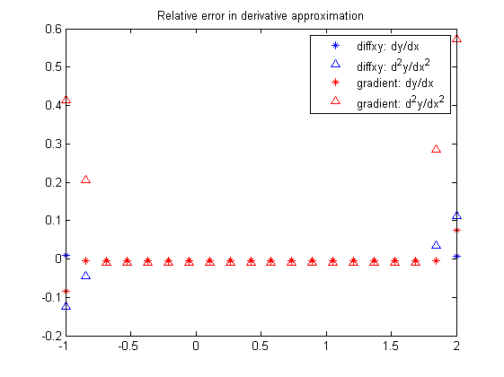
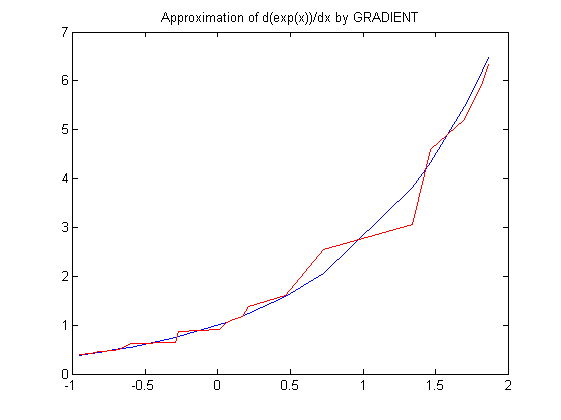
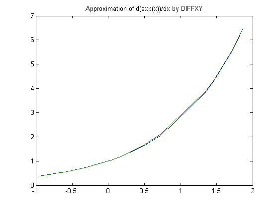
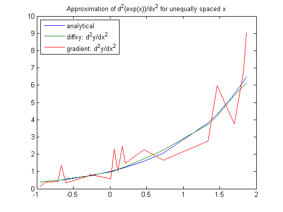
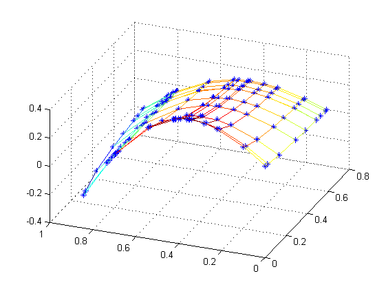
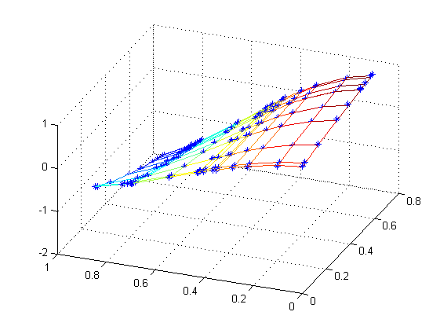

Contents
% Author: Darren Rowland % Version: 1.0 % Date: 8 November 2010
Points with equal spacing
When the x-values are equally spaced, the derivatives at the interior points as calculated by DIFFXY are approximated in the same way as the native Matlab function GRADIENT, i.e. using the central difference method. The endpoints are different because DIFFXY uses a higher-order approximation.
x = linspace(-1,2,20); y = exp(x); dy = diffxy(x,y); dy2 = diffxy(x,dy); % Or, could use >> dy2 = diffxy(x,y,[],2); figure('Color','white'); plot(x,(y-dy)./y,'b*',x,(y-dy2)./y,'b^') Dy = gradient(y)./gradient(x); Dy2 = gradient(Dy)./gradient(x); hold on plot(x,(y-Dy)./y,'r*',x,(y-Dy2)./y,'r^') title('Relative error in derivative approximation') legend('diffxy: dy/dx','diffxy: d^2y/dx^2',... 'gradient: dy/dx','gradient: d^2y/dx^2') hold off
Points with unequal spacing
DIFFXY was developed specifically to cope with unevenly spaced data. Consider the result when GRADIENT attempts to approximate the derivative of y=exp(x) when the x-values are randomly distributed.
x = 3*sort(rand(20,1))-1; y = exp(x); plot(x,y,x,gradient(y)./gradient(x),'r') title('Approximation of d(exp(x))/dx by GRADIENT')
Compare this to the approximation obtained by DIFFXY
plot(x,y,x,diffxy(x,y))
title('Approximation of d(exp(x))/dx by DIFFXY')
 The distinction is even more pronounced as higher-order derivatives are approximated.
dy2 = diffxy(x,y,[],2); Dy = gradient(y)./gradient(x); Dy2 = gradient(Dy)./gradient(x); plot(x,y,x,dy2,x,Dy2) title('Approximation of d^2(exp(x))/dx^2 for unequally spaced x') legend('analytical','diffxy: d^2y/dx^2','gradient: d^2y/dx^2',... 'Location','NorthWest')
N-dimensional data
As well as operating on univariate data as above, DIFFXY can be used in general multidimensional space, obtaining the derivative in any single dimension one-at-a-time. This is different to GRADIENT, which returns the approximate derivatives in each coordinate direction simultaneously.
x = sort(rand(10,1)); y = sort(rand(15,1)); [X,Y] = ndgrid(x,y); f = sqrt(X).*Y.*cos(2*Y); % Exact partial derivatives f_x = f./(2*X); f_y = sqrt(X).*(cos(2*Y)-2*Y.*sin(2*Y)); dfdx = diffxy(x,f,1); dfdy = diffxy(y,f,2); mesh(X,Y,f_x) hold on plot3(X,Y,dfdx,'b*') hold off view(gca,[-68.5 40]);
mesh(X,Y,f_y) hold on plot3(X,Y,dfdy,'b*') hold off view(gca,[-68.5 40]);